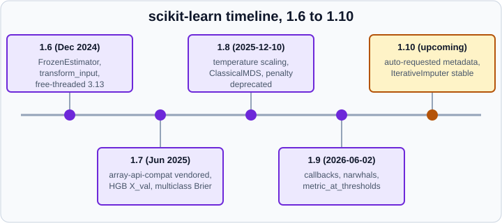

What’s New in scikit-learn 1.6 to 1.9
|
This content was generated with the assistance of AI and should be verified against the official documentation before being relied on in production. |
This page was checked in October 2026 against the scikit-learn 1.9.1 release (September 2026) and the 1.10 development notes, on Python 3.13 with NumPy 2.5 and pandas 3.1. The probes and examples were run on those versions. It has two jobs: to summarise what the four most recent minor releases changed, and to list what older books and tutorials get wrong today, so that you can translate their code. Everything labelled "upcoming" is in the unreleased 1.10 development line and may change before release.
scikit-learn ships a minor release about every six months, with bug-fix releases in between. A deprecation normally lasts two minor releases: the first release warns, and the second one after it removes the feature. The warnings are FutureWarning or DeprecationWarning, so run your tests with warnings turned into errors before you upgrade (python -W error::FutureWarning -m pytest).
Releases at a glance

| Version | Date | Headline changes |
|---|---|---|
1.6.0 |
December 2024 |
|
1.6.1 |
January 2025 |
Bug fixes; the old tag helpers raise |
1.7.0 |
June 2025 |
Sparse arrays accepted next to sparse matrices; |
1.7.1 and 1.7.2 |
July and September 2025 |
Bug fixes. |
1.8.0 |
December 2025 (the 10th) |
Temperature scaling in |
1.9.0 |
June 2026 (the 2nd) |
Callback API (experimental); |
1.9.1 |
September 2026 (the 10th) |
Bug fixes in array API metrics, metadata routing, callbacks, |
1.10 (upcoming) |
Not yet released |
Automatic metadata requests, stable |
Source: scikit-learn release history.
Requirements today
| Item | Value for scikit-learn 1.9.1 |
|---|---|
Python |
3.11 or newer. |
Required packages |
NumPy 1.24.1 or newer, SciPy 1.10.0 or newer, joblib 1.4.0 or newer, threadpoolctl 3.5.0 or newer and narwhals 2.0.1 or newer. |
narwhals |
A new, very lightweight dependency in 1.9 that simplifies dataframe input and the |
Optional |
pandas, polars, Matplotlib (for the Display classes), PyArrow, |
The Python and package minimums come from the package metadata of the 1.9.1 wheel. Check Installation for the install commands.
Release by release
1.6 (December 2024)
-
FrozenEstimator.
sklearn.frozen.FrozenEstimatorfreezes a fitted estimator:fitdoes nothing andclonereturns the same object. It replacesCalibratedClassifierCV(cv="prefit"). See FrozenEstimator. -
Pipeline metadata.
Pipelinecan transform metadata up to the step that needs it, through thetransform_inputparameter. -
Estimator tags.
__sklearn_tags__is the new way to set estimator tags; the private helpers_more_tags,_get_tagsand_safe_tagsare deprecated (they raiseDeprecationWarningfrom 1.6.1). Third-party estimators must inherit fromBaseEstimator, which implements the new method.utils.validation.validate_datareplaces the private_validate_datamethod. -
Free-threaded Python. Preliminary support, with wheels for the experimental free-threaded CPython 3.13 on all supported platforms.
-
Lazy submodule access.
import sklearn; sklearn.svm.SVC()now works without importingsklearn.svm. -
Array API. Search classes (
GridSearchCV,RandomizedSearchCV,HalvingGridSearchCV,HalvingRandomSearchCV) accept array API inputs when their base estimator does. Support forcupy.array_apiwas removed in favour of the top-levelcupymodule. -
Deprecations that followed.
AdaBoostClassifier(algorithm=...)(removal announced for 1.8; theSAMME.Rvalue itself was deprecated in 1.4),force_all_finite(renamedensure_all_finite, removal announced for 1.8),scoring="max_error"(use"neg_max_error"), and the defaultresponse_method=Noneofmake_scorer.
1.7 (June 2025)
-
Sparse arrays. As part of the SciPy move from
spmatrixtosparray, internal code accepts both. Input of either kind works. -
Vendored array libraries.
array-api-compatandarray-api-extraship inside scikit-learn, so array API users no longer installarray-api-compatthemselves. -
HistGradientBoosting.
X_val,y_valandsample_weight_valcan be passed tofitto control the early-stopping validation set. -
Metrics.
brier_score_losssupports multiclass problems and has ascale_by_halfargument;RocCurveDisplay.from_cv_resultsplots curves fromcross_validateresults; inRocCurveDisplay.from_predictionsthe argumenty_predwas renamedy_score. -
Estimators.
DictionaryLearningandSparseCodergainedinverse_transform; the neural network estimators acceptsample_weight; mixture models storelower_bounds_. -
Deprecations.
liblinearwith a one-versus-rest multiclass scheme inLogisticRegression(an error from 1.8; wrap inOneVsRestClassifier),n_alphasin the cross-validated Lasso and Elastic-Net classes (usealphaswith an integer),force_int_remainder_colsinColumnTransformer, and integer columns inpartial_dependence.
1.8 (December 2025)
-
Calibration.
CalibratedClassifierCVhasmethod="temperature". -
Manifold learning.
ClassicalMDS(classical multidimensional scaling) was added;MDSaccepts arbitrary metrics. -
Array API.
StandardScaler,RidgeCV,RidgeClassifier,GaussianMixture,PolynomialFeatures,GaussianNB,cross_val_predictand many metrics gained support. -
Free-threaded Python 3.14. Wheels are available for all supported platforms on the free-threaded CPython 3.14, which the project recommends over 3.13 for trying free-threading.
-
Metrics.
confusion_matrix_at_thresholdsandd2_brier_score. -
Linear models.
penaltyofLogisticRegressionandLogisticRegressionCVis deprecated: usel1_ratio(0 for L2, 1 for L1, in between for elastic net) andC=np.inffor no regularisation.n_jobsofLogisticRegressionis deprecated because it has had no effect since 1.8.PassiveAggressiveClassifierandPassiveAggressiveRegressorare deprecated in favour ofSGDClassifierandSGDRegressorwithlearning_rate="pa1"or"pa2". -
Discriminant analysis.
QuadraticDiscriminantAnalysisgainedsolver,covariance_estimatorandshrinkage.
1.9 (June 2026, 1.9.1 in September 2026)
-
Callback API (experimental).
set_callbacksattaches callbacks to the fit of supporting estimators.sklearn.callback.ProgressBar(needsrich) andsklearn.callback.ScoringMonitorship with it.LogisticRegression(withsolver="lbfgs"), the search classes,PipelineandStandardScalersupport callbacks. The API may change without the usual deprecation cycle. -
Thresholds.
metric_at_thresholdscomputes a metric at every threshold for the decision-threshold workflow;PrecisionRecallDisplay.from_cv_resultsplots several curves. -
Sparse interface. The configuration key
sparse_interfacechooses whether functions return SciPy sparse matrices ("spmatrix", the default) or sparse arrays ("sparray"). The plan is to change the default to"sparray"in a few releases. -
narwhals. The new dependency described above.
-
HTML representation. Estimators display a table of their fitted attributes (public attributes ending in an underscore) and, for
ColumnTransformerandFeatureUnion, the names of the output features with a copy button. -
Zero weights. A
ValueErroris raised whensample_weightcontains only zeros, in all estimators that accept it. -
Array API.
LogisticRegressionandPoissonRegressor(withsolver="lbfgs"),FeatureUnion,Nystroem,RidgeCVand more metrics gained support; themove_estimator_toutility was added. -
Deprecations.
SVC(probability=...)andNuSVC(probability=...), with theprobA_andprobB_attributes (useCalibratedClassifierCV(SVC(), ensemble=False));shuffleandrandom_stateofTargetEncoder(pass a splitter ascv);criterion="friedman_mse"for trees and thecriterionparameter of gradient boosting;n_alphasinlasso_pathandenet_path; positionalsample_weightinLogisticRegressionCV.score. -
Removed in 1.9.
n_alphasin the cross-validated Lasso and Elastic-Net classes (LassoCV,ElasticNetCVand their multi-task variants; pass an integer toalphas) andforce_int_remainder_colsinColumnTransformer. Passing either raises aTypeError. -
Behaviour changes.
PowerTransformer(method="yeo-johnson")usesscipy.stats.yeojohnson, so results can differ in the last digits; random forests and extra trees draw samples usingsample_weight;MiniBatchKMeanshandles sample weights correctly;LinearDiscriminantAnalysiswithsolver="svd"normalises likesolver="eigen"(1.9.1). -
1.9.1 fixes. Array API metrics accept pandas labels; metadata is routed to sub-estimators of
SelectFromModel,RFE,RFECV,SequentialFeatureSelectorandIterativeImputerinside pipelines, andBaggingClassifierandTransformedTargetRegressorroute it correctly;ScoringMonitorworks with multi-process backends;DBSCANandOPTICSstop warning on precomputed sparse matrices;fetch_openmlrecovers from a corrupted download; memory leaks and an out-of-bounds write inLinearSVRandLinearSVCwere fixed.
Source: scikit-learn 1.9 release notes; 1.8; 1.7; 1.6.
1.10 (upcoming)
The development notes (1.10.dev0, October 2026) list changes that are not in any release yet.
-
Metadata auto-requests.
set_config(enable_metadata_auto_requests=True)lets estimators, scorers and splitters request common metadata such assample_weightautomatically;HistGradientBoosting*auto-requestX_val,y_valandsample_weight_val. -
IterativeImputer. No longer experimental: import it from
sklearn.impute, and the old enabling import becomes a warning and a no-op. On 1.9.1 you still needfrom sklearn.experimental import enable_iterative_imputer. -
Experimental import.
sklearn.experimental.enable_hist_gradient_boostingis deprecated (removal in 1.12). -
Random forests.
categorical_featuresforRandomForest*andExtraTrees*, including"from_dtype", which is planned to become the default in 1.13. -
GLMs and logistic regression. New
newton-cdandnewton-cd-gramsolvers and L1 and elastic-net penalties forGammaRegressor,PoissonRegressorandTweedieRegressor. -
Parametrisation.
CofLogisticRegressionandCsofLogisticRegressionCVare deprecated in favour ofalphaandalphas(alpha = 1 / C), with removal planned for 1.14. -
Array API. More estimators and metrics (
LedoitWolf,OAS,LogisticRegressionCV,matthews_corrcoef) and fixes for mixed namespaces. -
Changed models.
QuantileTransformerestimates quantiles differently and no longer capsn_quantilesatn_samples;HistGradientBoosting*draw the per-split feature subset differently whenmax_features < 1.0;partial_dependencecomputes its grid withnumpy.nanquantile.
Deprecations in force and removals to expect
The first column lists code that still runs on 1.9.1 but warns.
| Deprecated code | Use instead | Removal | Notes |
|---|---|---|---|
|
|
1.10 |
Deprecated in 1.8. Running it on 1.9.1 raises |
|
nothing; the parameter has no effect |
1.10 |
Deprecated in 1.8. |
|
|
1.10 |
Deprecated in 1.8. |
|
|
1.11 |
Deprecated in 1.9 because it is not thread-safe. Running it on 1.9.1 raises |
|
|
1.11 |
Deprecated in 1.9. |
|
|
1.11 |
Deprecated in 1.9. |
|
pass |
default changes in 1.11 |
The default will become |
|
|
1.12 (upcoming) |
Importing it on 1.9.1 emits a |
Run the new features
A callback that records a score at each iteration
from sklearn.callback import ScoringMonitor
from sklearn.datasets import make_classification
from sklearn.linear_model import LogisticRegression
X, y = make_classification(random_state=0)
monitor = ScoringMonitor(scoring="accuracy")
clf = LogisticRegression(solver="lbfgs", max_iter=50).set_callbacks(monitor)
clf.fit(X, y)
log = monitor.get_logs()
df = log.data_as_pandas
print(type(log).__name__)
print(df.columns.tolist())
print(df[["task_name", "accuracy"]].head())
print(len(df))Output:
ScoringMonitorLog
['task_id_path', 'parent_task_id_path', 'estimator_name', 'task_name', 'task_id', 'sequential_subtasks', 'accuracy']
task_name accuracy
0 fit 0.94
1 lbfgs-iter 0.88
2 lbfgs-iter 0.89
3 lbfgs-iter 0.92
4 lbfgs-iter 0.92
11
The monitor scores the model on the training data at each lbfgs iteration and stores the rows in a log that converts to a pandas frame. The API is experimental: the column names and the way get_logs groups runs may change.
A metric at every threshold
import numpy as np
from sklearn.datasets import make_classification
from sklearn.linear_model import LogisticRegression
from sklearn.metrics import f1_score, metric_at_thresholds
from sklearn.model_selection import train_test_split
X, y = make_classification(n_samples=300, random_state=0)
X_tr, X_te, y_tr, y_te = train_test_split(X, y, random_state=0)
scores = LogisticRegression().fit(X_tr, y_tr).predict_proba(X_te)[:, 1]
values, thresholds = metric_at_thresholds(y_te, scores, f1_score)
best = int(np.argmax(values))
print(values.shape, thresholds.shape)
print(round(float(thresholds[best]), 3), round(float(values[best]), 3))Output:
(75,) (75,) 0.684 0.932
metric_at_thresholds(y_true, y_score, metric_func, ...) calls metric_func for the predictions obtained at each distinct score threshold, so you can plot or maximise any metric. Choosing a threshold on the same data you evaluate on is optimistic; use a validation set, or TunedThresholdClassifierCV, as in Tuning the Decision Threshold.
Sparse arrays instead of sparse matrices
import sklearn
from sklearn.preprocessing import OneHotEncoder
data = [["a"], ["b"], ["a"]]
print(type(OneHotEncoder().fit_transform(data)).__name__, sklearn.get_config()["sparse_interface"])
sklearn.set_config(sparse_interface="sparray")
print(type(OneHotEncoder().fit_transform(data)).__name__)
sklearn.set_config(sparse_interface="spmatrix")Output:
csr_matrix spmatrix csr_array
Where older books and tutorials are outdated
Learning material about scikit-learn ages quickly, because the project removes deprecated code after two releases. The tables below translate what you will meet in older books and tutorials. They list API names and release dates, not book text. Wherever a book and the official documentation disagree, the official documentation of the current release wins.
Names that no longer exist
The probe below imports or calls each legacy name on scikit-learn 1.9.1 and prints the kind of error it produces.
import importlib
import warnings
import numpy as np
warnings.simplefilter("ignore")
rng = np.random.RandomState(0)
X = rng.rand(30, 3)
y = rng.randint(0, 3, 30)
def status(fn):
try:
fn()
return "works"
except Exception as exc:
return type(exc).__name__
def imp(code):
return lambda: exec(code, {})
from sklearn.cluster import AgglomerativeClustering
from sklearn.ensemble import AdaBoostClassifier, BaggingClassifier
from sklearn.linear_model import LogisticRegression, RidgeCV
from sklearn.manifold import TSNE
from sklearn.preprocessing import OneHotEncoder
from sklearn.utils import check_array
probes = [
("import sklearn.cross_validation", lambda: importlib.import_module("sklearn.cross_validation")),
("import sklearn.grid_search", lambda: importlib.import_module("sklearn.grid_search")),
("import sklearn.learning_curve", lambda: importlib.import_module("sklearn.learning_curve")),
("import sklearn.externals.joblib", lambda: importlib.import_module("sklearn.externals.joblib")),
("preprocessing.Imputer", imp("from sklearn.preprocessing import Imputer")),
("preprocessing.CategoricalEncoder", imp("from sklearn.preprocessing import CategoricalEncoder")),
("datasets.load_boston", imp("from sklearn.datasets import load_boston")),
("datasets.fetch_mldata", imp("from sklearn.datasets import fetch_mldata")),
("metrics.plot_confusion_matrix", imp("from sklearn.metrics import plot_confusion_matrix")),
("metrics.plot_roc_curve", imp("from sklearn.metrics import plot_roc_curve")),
("OneHotEncoder(sparse=False)", lambda: OneHotEncoder(sparse=False)),
("OneHotEncoder().get_feature_names()", lambda: OneHotEncoder().fit([["a"], ["b"]]).get_feature_names()),
("BaggingClassifier(base_estimator=...)", lambda: BaggingClassifier(base_estimator=None)),
("AdaBoostClassifier(algorithm=...)", lambda: AdaBoostClassifier(algorithm="SAMME.R")),
("AgglomerativeClustering(affinity=...)", lambda: AgglomerativeClustering(affinity="euclidean")),
("TSNE(n_iter=...)", lambda: TSNE(n_iter=250)),
("RidgeCV(store_cv_values=...)", lambda: RidgeCV(store_cv_values=True)),
("check_array(force_all_finite=...)", lambda: check_array([[1.0]], force_all_finite=True)),
("LogisticRegression(multi_class=...)", lambda: LogisticRegression(multi_class="ovr")),
("LogisticRegression(0.5) positional", lambda: LogisticRegression("l2", 0.5)),
]
for name, fn in probes:
print(f"{name:42s} {status(fn)}")
with warnings.catch_warnings(record=True) as caught:
warnings.simplefilter("always")
LogisticRegression(penalty="l2").fit(X, y)
print("LogisticRegression(penalty='l2') ", caught[0].category.__name__)Output:
import sklearn.cross_validation ModuleNotFoundError import sklearn.grid_search ModuleNotFoundError import sklearn.learning_curve ModuleNotFoundError import sklearn.externals.joblib ModuleNotFoundError preprocessing.Imputer ImportError preprocessing.CategoricalEncoder ImportError datasets.load_boston ImportError datasets.fetch_mldata ImportError metrics.plot_confusion_matrix ImportError metrics.plot_roc_curve ImportError OneHotEncoder(sparse=False) TypeError OneHotEncoder().get_feature_names() AttributeError BaggingClassifier(base_estimator=...) TypeError AdaBoostClassifier(algorithm=...) TypeError AgglomerativeClustering(affinity=...) TypeError TSNE(n_iter=...) TypeError RidgeCV(store_cv_values=...) TypeError check_array(force_all_finite=...) TypeError LogisticRegression(multi_class=...) TypeError LogisticRegression(0.5) positional TypeError LogisticRegression(penalty='l2') FutureWarning
Source: scikit-learn release history.
| Old code you will see | Current code | Dates from the release notes |
|---|---|---|
|
|
Moved in 0.18 (September 2016). |
|
|
New module in 0.20 (September 2018). |
|
|
Never released in a final version; 0.20 extended the encoders instead. |
|
|
Deprecated in 0.21 (May 2019). |
|
|
Deprecated in 0.20 for removal in 0.22; mldata.org is gone. |
|
|
Deprecated in 1.0 (September 2021), removed in 1.2 (December 2022). |
|
|
Deprecated in 1.0, removed in 1.2. |
|
|
|
|
|
Deprecated in 1.2, removal announced for 1.4. |
|
|
Renamed over 1.2 to 1.6; absent on 1.9.1. |
|
|
Renamed over 1.2 to 1.4. |
|
nothing: |
|
|
|
Deprecated in 1.5, removal announced for 1.7. |
|
|
Deprecated in 1.5. |
|
|
Deprecated in 1.6, removal announced for 1.8. |
|
nothing for three or more classes (multinomial); |
Deprecated in 1.5, removal announced for 1.8. |
|
|
Deprecated in 1.8, removal in 1.10. See the table above. |
|
|
Deprecated in 1.9, removal in 1.11. |
|
|
Deprecated in 1.6; rejected on 1.9.1. |
Positional hyper-parameters such as |
Keyword arguments |
Enforced since 1.0; the probe shows |
Defaults that changed in 0.22
Code written before December 2019 (scikit-learn 0.22.0 was released on December 3, 2019) may assume the old defaults. These are the current values, confirmed on 1.9.1.
| Setting | Current default | Used to be |
|---|---|---|
|
100 |
10 |
|
5 folds |
3 folds |
|
|
|
|
|
|
Other defaults that moved later: KMeans(n_init="auto") since 1.4 (older code often passes n_init=10), keyword-only arguments since 1.0, and fetch_openml(as_frame="auto"), which returns a DataFrame by default, so code that indexes the result as an array, such as X[0], fails.
Other statements to watch for
-
Seeding. Tutorials call
np.random.seed(42)and then rely on global state. scikit-learn recommends passingrandom_stateexplicitly; see Common Pitfalls. -
StratifiedKFold(random_state=...)withoutshuffle=True. It raisesValueError. -
Experimental imports.
HistGradientBoosting*is stable and its enabling import is a warning today.IterativeImputerand the halving searches still need theirsklearn.experimentalimports on 1.9.1. -
TargetEncoder.fit(X, y).transform(X)differs fromfit_transform(X, y), which cross-fits to avoid leakage. -
set_output. Pandas output arrived in 1.2 and polars output in 1.4; dataframe handling now rests on narwhals. On 1.9.1 with pandas 3.1,make_column_selector(dtype_include=object)still selects the newstrcolumns, so older pandas code keeps working. -
Pickled models. Loading a model in a different scikit-learn version is unsupported. See Model Persistence and Security.
-
Python 2 code.
printstatements, integer division,xrangeandimport pylabneed translating before anything else.
Reading books and tutorials by their scikit-learn era
| Source and year | Targets | What to translate |
|---|---|---|
Géron, Hands-On Machine Learning with Scikit-Learn and TensorFlow (O’Reilly, 2017) |
scikit-learn about 0.18 |
|
Géron, Hands-On Machine Learning with Scikit-Learn, Keras, and TensorFlow, 2nd edition (O’Reilly, 2019, early release copy) |
scikit-learn 0.20 to 0.22 |
|
Géron, Hands-On Machine Learning with Scikit-Learn and PyTorch (O’Reilly, 2025) |
scikit-learn 1.5 or newer |
The most current of the books. It predates 1.7 to 1.9 and pandas 3, so expect |
Igual and Seguí, Introduction to Data Science (Springer, 2017) |
Python 2.7, scikit-learn before 0.20 |
|
McKinney, Python for Data Analysis, 2nd edition (O’Reilly, 2017) |
pandas about 0.20, a short scikit-learn section |
Mostly pandas; use the open-access 3rd edition instead where possible. |
Marsland, Machine Learning: An Algorithmic Perspective, 2nd edition (CRC Press, 2015) |
Python 2 and NumPy |
Valuable for from-scratch theory; Python 2 |
Skansi, Introduction to Deep Learning (Springer, 2018) |
Python 3.5 or 3.6, standalone Keras 2 |
Use |
Skiena, The Data Science Design Manual (Springer, 2017) |
language-agnostic |
No library code to update; the conceptual advice on baselines and evaluation still holds. |
None of the books covers FrozenEstimator, array API dispatch, set_output, metadata routing, the callback API, or the modern leakage and reproducibility practices on this page and in Common Pitfalls; those topics come only from the official documentation.
Staying current
-
Subscribe to the release history and read the "API Change" lines first.
-
Run your tests with
-W error::FutureWarning -W error::DeprecationWarningon a CI job that installs the newest release. -
Pin the minor version of scikit-learn in the environment that trains and serves a model, and rebuild the model when you upgrade; see Model Persistence and Security.
-
Treat anything labelled experimental (array API, callbacks,
sparse_interfacedefaults) as subject to change without a deprecation cycle.